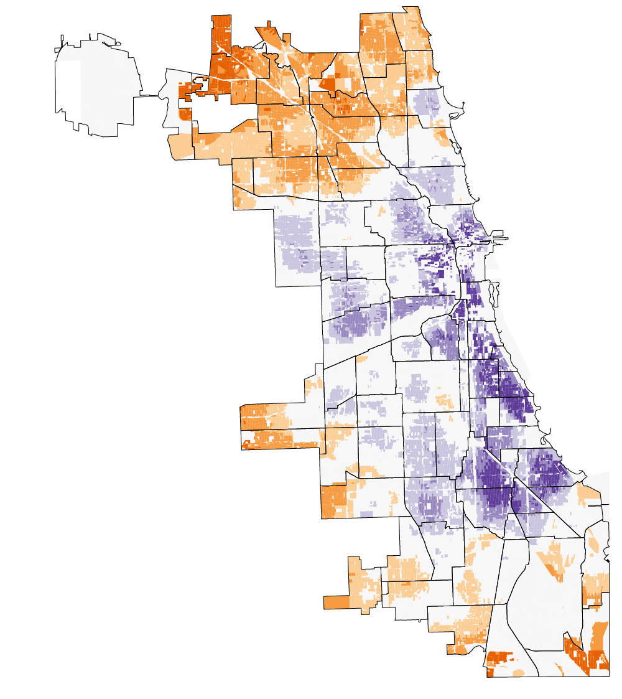
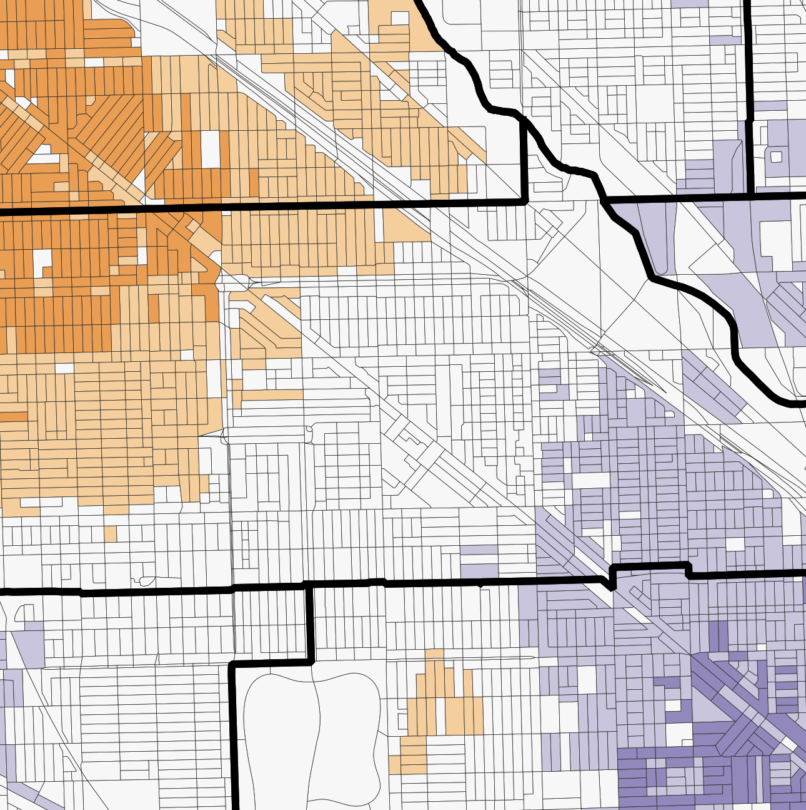
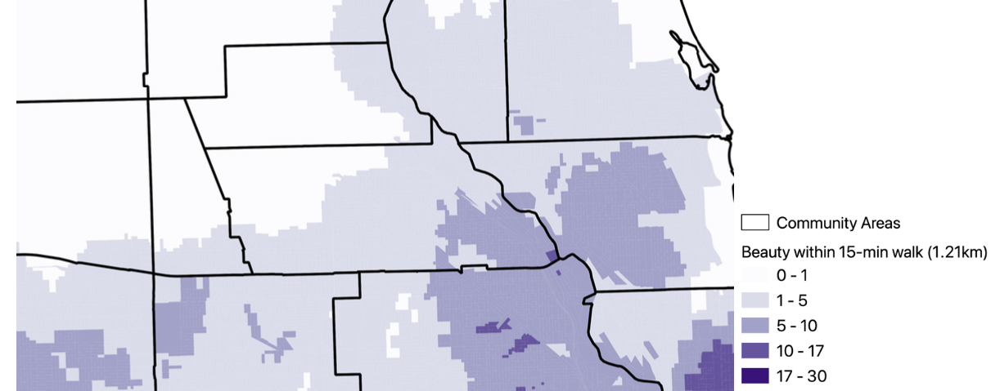
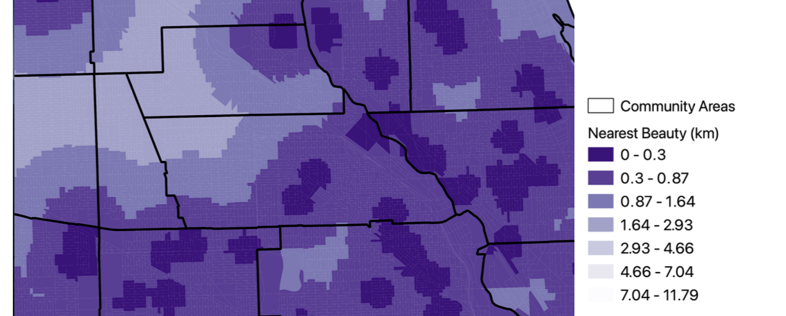
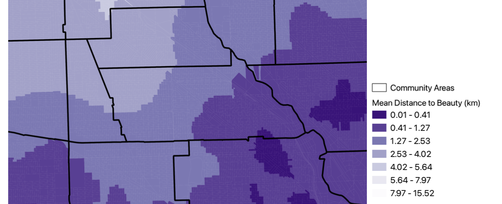

ELI HARRELL
Mapping Beauty Access
Chicago is perhaps the most mapped city in America, and most of these
maps
reinscribe the same North-South or center-periphery
pattern studied by. Access to beauty services, defined as salons or supply stores, is quite different.
Using a Google Maps scraping tool, I sampled the distribution of these establishments and created a "beauty accessibility index" (BAI) for
each census tract in the city.
click images to view them at full size.
| The city-level pattern. The darkest orange areas are the most underserved by beauty retailers, with few nearby relative to their population, while purple areas are better-served than average. |  |
|
A snippet of Logan Square. Purple tracts have more beauty salons and stores per capita (p),
more within walking distance (w), nearer nearest location (n) and shorter average distances to these businesses (m).
p: tract population w: qty. within 0.75mi n: dist. to nearest m: mean dist. to any Z(•): Z-score function |

|
| Snippets of the separate tract-level maps of raw counts and distances weighted together to form the above BAI map. |
Number of salons/shops within 15-minute walk  Distance to nearest salon/shop  Mean distance to any salon/shop in Chicago  |